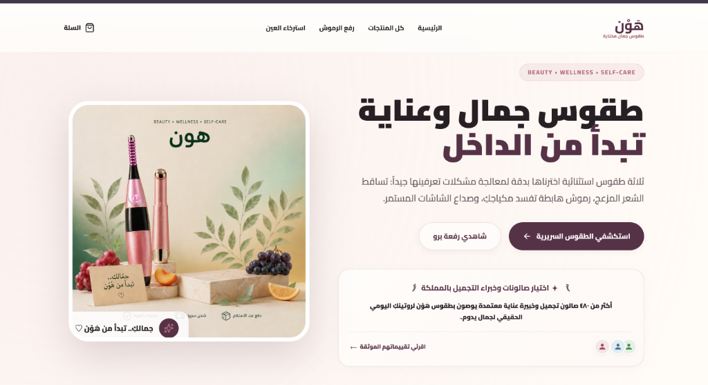

Kampagnen
Kampagnen strukturieren, Zielgruppen verstehen und Creatives testen.
Junior E-Commerce · Performance Marketing · Shop Operations. Ich unterstütze Teams bei digitalen Verkaufsprozessen: von Kampagnenarbeit und Shop-Umsetzung bis zur Kommunikation mit Kunden und Lieferanten.
Hands-on Arbeit an sichtbaren Aufgaben, nicht nur Theorie.
Kampagnen strukturieren, Zielgruppen verstehen und Creatives testen.
Produktseiten, Produktdaten, Kategorien und Angebote sauber aufbauen.
Klicks, CTR, Conversion und Kosten pro Ergebnis lesen und einordnen.
Bestellungen begleiten und klare Informationen für Kunden vorbereiten.
China-Sourcing, Produktabstimmung und Kommunikation im Warenfluss.
Bestellbestätigung, Fulfillment und Lieferprozesse nachvollziehen.

Bei Kampagnen schaue ich nicht nur auf Reichweite. Ich verbinde Creative, Zielgruppe, Produktseite und Bestellprozess, damit aus Klicks nachvollziehbare nächste Schritte werden.
Ich möchte meine praktische E-Commerce-Erfahrung in ein professionelles Team einbringen, mit klaren Prozessen weiterentwickeln und langfristig Verantwortung übernehmen.
Gerne stelle ich meine Arbeitsweise, Praxisbeispiele und Unterlagen persönlich vor.